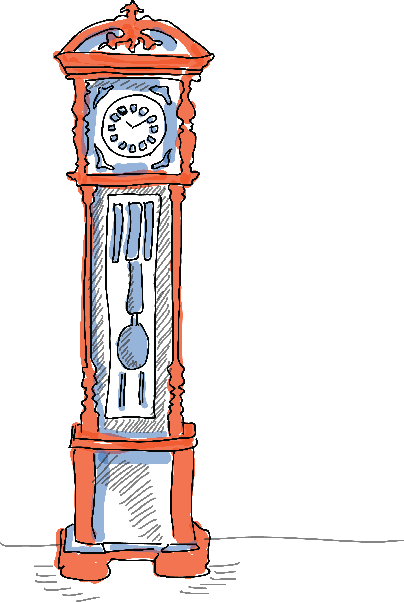

Past
3D printing has been around for more than three decades though it is commonly thought of as being a futuristic concept. Chuck Hull invented the very first 3D printing technique in 1983 and the process is called stereolithography. According to this technique, layers of light curable liquid are laid one on top of the other to create the 3D form. Later on, it was found that any material capable of solidifying or altering its physical state can be used for 3D printing and that forms the basis for the additive manufacturing that we are aware of, now.
In the year 1987, Carl Decker invented the Selective Laser Sintering process. This technique makes use of laser to melt and solidify layers of powdered material into finished objects. In this technique, the first layer is printed on powder and is melted using laser. Once it solidifies, the bed moves downward and a new layer of powder is spread on top of this layer. This technique is mostly used for industrial 3D printing applications.
In the year 1989, Scott Crump invented the Fused Deposit Modeling technique. This technique has a string of solid material called the filament, which is heated by a nozzle. The filament melts and can be extruded on a path created by the computer. Once one layer is extruded, it cools down and solidifies. The subsequent layers are laid on top of each other to create the 3D structure. This is the most common technology used for desktop 3D printing and is most suitable for quick, low-cost prototyping.
By mid 1990s new technologies for material deposition were invented including microcasting and sprayed materials. In the year 2007, 3D printing started becoming more accessible to a wider audience due to the advent of RepRap – concept of an open source self replicating 3D printer.
By 2012, alternative 3D printing processes utilizing stereolithography started entering the market for a wide audience and mainstream media channels picked up on the technology.